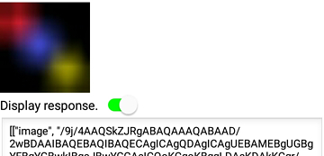

AI2とPythonの連携で、App Inventor2（以降AI2）とPythonでの簡単なやり取りを行いました。
今回は、Pythonで受け取った画像データをOpenCVでぼかし処理（cv2.blur）を行ってから返信します。
簡単そうに見えて、変換部分にポイント満載です。コード自体は難しくありませんので安心してください。
前回と同様に、作成したプログラム（今回はPythonスクリプトなど）はこちらに置いておきます。本ページではポイントを説明します。
バイナリーデータとOpenCVのMAT形式の相互変換
Python上で「OpenCV」と「Numpy」を使いますので、インストールしていない場合は以下をDOSプロンプトで実行してください。python.exeのあるディレクトリに移動してから実行してください。
python -m pip install opencv-python
python -m pip install numpyまず、「Base64の文字列 ⇒ バイナリーデータ」の変換は前回説明しましたので、省略します。
「バイナリーデータ ⇒ OpenCVのMAT形式」の変換は、「OpenCV」のライブラリにはありません。「Numpy」を利用します。
import numpy as np
import cv2
nparr = np.fromstring([バイナリーデータ], np.uint8)
[OpenCVのMAT形式] = cv2.imdecode(nparr, cv2.IMREAD_COLOR)「OpenCVのMAT形式 ⇒ バイナリーデータ」の変換は、「OpenCV」のライブラリにあります。
import cv2
ret, [バイナリーデータ] = cv2.imencode('.jpg', [OpenCVのMAT形式])上の例はJPG形式でエンコードしています。
バイナリーデータをBase64の文字列に変換
これは、そんなに難しくありません。以下の通りです。
[Base64の文字列] = base64.b64encode([バイナリーデータ]).decode('utf-8')Pythonスクリプト
今回の機能を実現するスクリプトは以下の通りです。スクリプト名はai2-test-post2.pyです。
#-*-coding:utf-8;-*-
import base64
from flask import Flask, request
import numpy as np
import cv2
app = Flask(__name__)
@app.route('/')
def index():
return 'Hello World!'
@app.route('/post',methods=["POST"])
def test_post():
print(request.headers)
str_enc = request.json['image']
bin_dec = base64.urlsafe_b64decode(
str_enc + '=' * (-len(str_enc) % 4))
fnm = 'C:/tmp/flsk-test-post/tmp000.jpg'
with open(fnm, "wb") as f:
f.write(bin_dec)
return '{"json":{"image":"' + str_enc + '"}}'
@app.route('/blur',methods=["POST"])
def test_blur():
print('OpenCV version is {0}'.format(cv2.__version__))
size = request.args.get('size', default=3, type=int)
str_enc = request.json['image']
bin_dec = base64.urlsafe_b64decode(
str_enc + '=' * (-len(str_enc) % 4))
nparr = np.fromstring(bin_dec, np.uint8)
img = cv2.imdecode(nparr, cv2.IMREAD_COLOR)
img_blur = cv2.blur(img, (size, size))
ret, img_enc = cv2.imencode('.jpg', img_blur)
str_enc_blur = base64.b64encode(img_enc).decode('utf-8')
return '{"json":{"image":"' + str_enc_blur + '"}}'test_blur()におけるデータ変換は以下の部分です。
【Base64の文字列 ⇒ バイナリーデータ】
bin_dec = base64.urlsafe_b64decode(
str_enc + '=' * (-len(str_enc) % 4))
【バイナリーデータ ⇒ OpenCVのMAT形式】
nparr = np.fromstring(bin_dec, np.uint8)
img = cv2.imdecode(nparr, cv2.IMREAD_COLOR)
【OpenCVのMAT形式 ⇒ バイナリーデータ】
ret, img_enc = cv2.imencode('.jpg', img_blur)
【バイナリーデータ ⇒ Base64の文字列】
str_enc_blur = base64.b64encode(img_enc).decode('utf-8')ぼかし処理は以下の部分です。
img_blur = cv2.blur(img, (size, size))sizeは以下の部分でURLから取得しています。
size = request.args.get('size', default=3, type=int)ちなみにURLはこんな感じです。http://[アドレス]:[ポート番号]/blur?size=★。★にぼかし処理のサイズを入力します。「?」以降を省略した場合は、デフォルトの3になります。
実行画面の例
スマホとPCを同一のWiFi環境で繋げました。私の環境では、PCのアドレスは「192.168.10.8」でした。
前回と同様に、PC上でスクリプト実行します。そして、スマホ上でSampleHttpPost2を起動し、画像を選択し、URLは以下のように設定します。（sizeはデフォルト値3になります）
画像1
そして、「Send」ボタンを押します。
画像2
少しボケた画像が返ってきます。次に、以下のようにURLを設定します。
画像3
再度、「Send」ボタンを押します。

画像4
さらに、広範囲でボケます。簡易なIoTのシステムを作成できそうな気がしませんか？